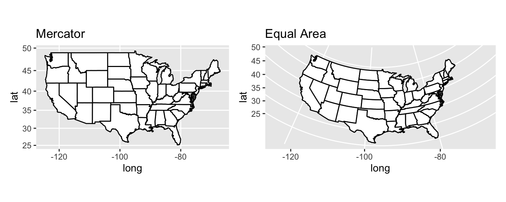

By the end of today, you should be able to:
Access, understand, and change the projection of a
Spatial*andsfobjectJoin datasets by attribute or location
Implement a workflow for extracting raster data to polygons (i.e., zonal stats)
1/27/2020
By the end of today, you should be able to:
Access, understand, and change the projection of a Spatial* and sf object
Join datasets by attribute or location
Implement a workflow for extracting raster data to polygons (i.e., zonal stats)
Image Source: M. Corey, opennews.org

Projections tell your computer how to ‘flatten’ your data into a 2-dimensional map
Goal is to choose projection that best maintains both distance and direction
R stores this information as either a proj4 string, an EPSG code
ESRI, ENVI, and a few other platforms also use WKT, the “Well-known text” format.
A CRS generally contains:
the Ellipsoid: Describes the general shape of the globe (not exactly spherical)
the Datum: Defines the origin and orientation of the coordinate access
the Projection: Projects the globe onto a 2-D surface
the units: the units of the map (e.g., meters, decimal degrees, arc-seconds)
the conversion used to convert to the ellipsoid
idaho <- rgdal::readOGR("./data/idaho_cty.shp")
sp::proj4string(idaho)
idaho.sf <- sf::st_read("./data/idaho_cty.shp")
sf::st_crs(idaho.sf)
sp#choose a few projections nad83 <- "+init=epsg:4269" idaho.cent <- "+proj=tmerc +lat_0=41.66666666666666 +lon_0=-114 +k=0.9999473679999999 +x_0=500000.0001016001 +y_0=0 +ellps=GRS80 +datum=NAD83 +to_meter=0.3048006096012192 +no_defs " idaho.83 <- spTransform(idaho, CRS(nad83)) idaho.c <- spTransform(idaho, CRS(idaho.cent)) #are they different? identicalCRS(idaho.83, idaho.c) #reproject idaho.cent idaho.reproj <- spTransform(idaho.83, proj4string(idaho.c)) #are they different? identicalCRS(idaho.c, idaho.reproj)
sf#choose a few projections nad83 <- "+init=epsg:4269" idaho.cent <- "+proj=tmerc +lat_0=41.66666666666666 +lon_0=-114 +k=0.9999473679999999 +x_0=500000.0001016001 +y_0=0 +ellps=GRS80 +datum=NAD83 +to_meter=0.3048006096012192 +no_defs " idaho.sf.83 <- sf::st_transform(idaho.sf, nad83) idaho.sf.c <- sf::st_transform(idaho.sf, idaho.cent) ## are they the same? st_crs(idaho.sf.83) == st_crs(idaho.sf.c) ##reproject using sf syntax idaho.sf.reproj <- st_transform(idaho.sf.83, st_crs(idaho.sf.c)) ## are they the same? st_crs(idaho.sf.reproj) == st_crs(idaho.sf.c)
Sometimes we want to add addtional attributes to our vector data
We can “Join” data together by shared attributes or locations
inner join: all rows from df1 with matching values in df2
left join: all rows from df1 and all columns from df1 and df2 (NAs where no match)
right join: all rows from df2 and all columns from df1 and df2
full join: all rows and columns from both dfs
semi join: all rows from df1 with matching values in df2, only columns from df1
anti join: all rows from df1 without matching values in df2, only columns from df2
sp and tigrishead(idaho.83@data)
#load a tabular dataset
idaho.nonprof <- read.csv("./data/bmfcount.csv", stringsAsFactors = FALSE, colClasses = "character")
head(idaho.nonprof)
#join based on the columns that match
idaho.join <- tigris::geo_join(idaho.83, data_frame = idaho.nonprof, by_sp = "GEOID", by_df="FIPS", how="left")
head(idaho.join@data)
str(idaho.join@data)
sfhead(idaho.sf.83)
str(idaho.sf.83)
idaho.join.sf <- idaho.sf.83 %>%
left_join(., idaho.nonprof, by = c("GEOID" = "FIPS"))
head(idaho.join.sf)
str(idaho.join.sf)
can use over from sp
Sometimes strange behavior when more than one intersection
Can also use gIntersects from rgeos or union from raster but syntax bcomes more complicated
#get some places within counties idaho.places <- tigris::places(state="16", year = "2015") #Ar the projections the same identicalCRS(idaho.join, idaho.places) #need to reproject idaho.places idaho.places.proj <- spTransform(idaho.places, proj4string(idaho.join)) #join based on location nonprof.join <- cbind(over(idaho.join, idaho.places.proj), as.data.frame(idaho.join)) str(nonprof.join)
sfidaho.places.sf <- as(idaho.places, "sf") #need to reproject idaho.places idaho.places.proj.sf <- st_transform(idaho.places.sf, st_crs(idaho.join.sf)) ##using st_join nonprof.join.sf <- st_join(idaho.join.sf, idaho.places.proj.sf, join=st_overlaps) str(nonprof.join.sf) nonprof.join.sf <- st_join(idaho.join.sf, idaho.places.proj.sf, join=st_intersects) str(nonprof.join.sf)
Similar to Zonal Stats in ArcGIS
Necessary when developing dataframes for statistical analyses
Lots of ways to do it. Trade-offs in memory, computational speed, and flexibility of outputs.
#load the raster
elev <- raster("./data/id_elev.tif")
#check the projection
identicalCRS(idaho.83, elev)
#project the vector to the raster!
idaho.proj <- spTransform(idaho.83, proj4string(elev))
#using extract from raster package
idaho.ext <- raster::extract(elev, idaho.proj)
idaho.ext.mn <- raster::extract(elev, idaho.proj, fun=mean)
#using velox elev.vx <- velox(elev) elev.ext.vx <- elev.vx$extract(sp = idaho.proj) #with sf idaho.proj.sf <- st_transform(idaho.sf.83, st_crs(elev)) elev.ext.vx.sf <- elev.vx$extract(sp = idaho.proj.sf) #with fasterize and idaho.cty.rstr <- fasterize(as(idaho.proj, "sf"), raster = elev, field = "GEOID") idaho.zones <- zonal(elev, idaho.cty.rstr, fun="mean") head(idaho.zones)
CRS library: searchable website for all of the EPSG and proj4 values for different projections
Choosing the right map projection: A deeper exploration of why projections matter and rules of thumb for selecting them.
NCEAS cheatsheet on CRS data in R: A description of how projections are developed, some best practices, and examples using sp and rgdal.